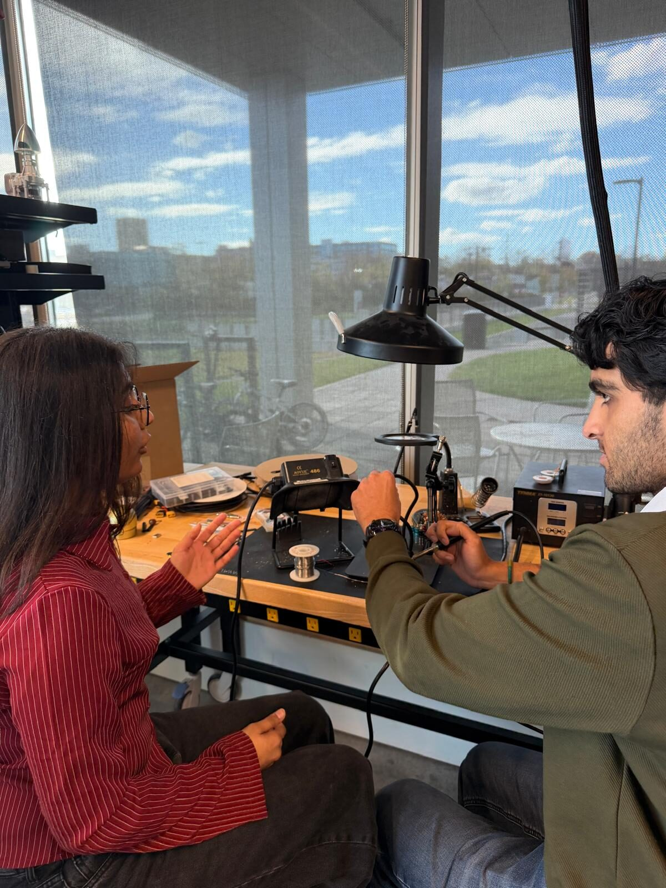
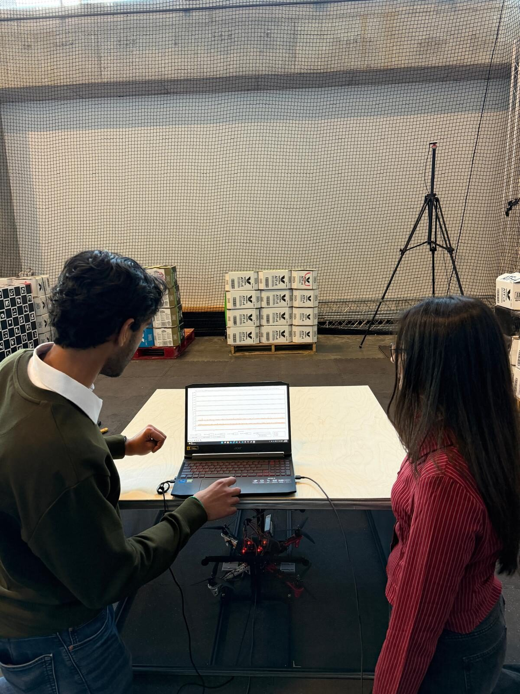

Practice technical leadership while completing Senior Design.
You do not need your whole team to participate. One interested Senior Design student can mentor one mentee while the rest of the team continues normally.

Knowing the answer is different from explaining the reasoning.
Mentoring turns Senior Design into an opportunity to practice communication, delegation, coaching, and technical leadership.
- Explain engineering decisions to someone with less project context.
- Practice assigning meaningful, appropriately scoped work.
- Review another student's documentation and technical understanding.
- Build a concrete mentoring and leadership experience for interviews and future roles.
- Help an earlier-stage student gain access to an engineering experience that can otherwise be difficult to get.
Be the primary guide — not the mentee's entire project team.
Provide context
Introduce the project, its goals, current status, and the reasoning behind important technical decisions.
Create meaningful exposure
Include the mentee in appropriate work sessions and identify activities they can observe, document, or contribute to.
Review and discuss
Answer reasonable questions and review mentee work so their understanding and documentation remain accurate.
Your teammates do not have to mentor.
If a Senior Design team has several students and only one wants to participate, that is completely acceptable. Mentorship is attached to the individual senior, not automatically to the entire team.
A mentor may have only one mentee at a time.
If you mentor during , you may decide later whether you want to take a different mentee during . There is no obligation to continue for a second semester.

Mentoring can be the Honors Experience. Your ordinary project work is not.
Examples of mentorship-specific time
- Working directly with your mentee
- Explaining project work during a shadowed session
- Discussing engineering reasoning and decisions
- Reviewing mentee notes, documentation, or other work
- Preparing appropriate learning activities
- Interviewing a potential mentee
- Completing mentorship-related reflections
Ordinary Senior Design work
Independent work you were already completing for Senior Design does not count as mentoring simply because a mentee is assigned to you.
The key distinction is whether the time genuinely involves mentorship, explanation, guidance, or another mentorship-specific responsibility.
What we need from you.
Your project
Working project title, the problem being addressed, expected technical work, tools or methods, and which disciplines would be appropriate for a mentee.
The learning opportunity
What a mentee could realistically observe or contribute to, why you want to mentor, what you hope the mentee gains, and your semester availability.
There is no minimum GPA requirement and no requirement that your teammates participate. Submitting the form does not guarantee a mentee match.
Put your Senior Design project forward.
mentor interest is open now. A match is made only when an appropriate mentee is available.